六十年を一本に並べる
天文十年1541〜 慶長七年1602以後
| 年 | 人 | できごと | 出どころ |
|---|---|---|---|
| 康正2 1456 | — | 湊の堯季が安東政季を秋田小鹿島に招く。子・忠季の代に「檜山屋形」 | 青森県通史（1941） |
| 天文10ヵ 1541 | 四郎右衛門尉 | 庄内の土佐林氏頼が封紙に「進上 大高四郎右衛門尉殿」 | 中世2 資料995 |
| 弘治年中 1555-58 | 相模守 | 浦城が落ち、盛永の子・千若丸が一年参籠（別伝。天正17年説と三十年ずれる）。愛季が土崎へ移り、相模守が霧山城を守る | 山本郡探勝案内 pid1030949 コマ25 |
| 永禄元 1558 | 筑前守 | 比内「中の平」で鹿角衆と会見。酌取りに脇差を贈る | 鹿角市史 資料編34集 |
| 永禄9-10ヵ 1566-67 | 筑前守 | 上杉家・直江政綱、本庄実乃の書状の宛所になる（宛名の表記は「大鷹筑前守」） | 中世2 資料999・1000 |
| 永禄10.2 1567 | — | 長牛城の攻防。血が流れて西堂ヶ沢の小川が赤く濁り、以後「スワウ川」と呼ばれる。矢文の歌の応酬もこの囲みの中 | 鹿角志 pid904128 コマ96 |
| 永禄10.10 1567 | 主馬 | 「家老」として六千の混成軍（秋田・比内・阿仁・由利・松前＋鹿角の内応者）を率い、谷内城を攻めて在家を焼き、翌日長牛城へ。城主一族は三戸へ落ちる | 鹿角志 pid904128 コマ96／南部叢書2 pid1179163 コマ198 |
| 元亀元 1570 | 相模守 | 檜山・秋田両郡の寺社領改めの奉行（石郷岡氏景と） | 北日本中世史の研究／脇本城と脇本城跡 |
| 元亀2 1571 | 筑前守 | 土佐林禅棟が鉄砲十四五挺、羽黒山造営の板柾、諸役免除を頼む二通 | 中世2 資料1017・1018 |
| 天正11以前ヵ 〜1583推定 | 筑前守 | 由利・絲桶山と蒸懸権現堂の合戦。四将の一人〔年は推定：相手の大宝寺義氏は天正11年に討たれる〕 | 資料1309／世臣譜1308-c |
| 天正10-15ヵ 1582-87推定 | 相模守 | 武田信玄一族の浪人・武田重左衛門を召し抱え、八森の古館に据えて津軽境口を守らせる〔年は推定：武田家の滅亡（天正10年）の後、愛季の死の前〕 | 山本郡探勝案内 pid1030949 コマ55-56 |
| 天正15 1587 | — | 安東愛季、仙北の陣中で病死。嫡子も同年に死ぬ | 奥南落穂集ほか |
| 天正16頃 1588 | 傳右衛門 | 野代（能代）の城代となる | 秋田沿革史大成 下 コマ505 |
| 天正17 1589 | 相模守 | 黒川方面から脇本城への通路を開く。「大なる相模御忠節」（原文は「大高相模」） | 中世2 資料1115 |
| 天正17 1589 | 相模守 | 浦城の三浦盛永を討つ（別伝＝盛永は実季と戦って陣死） | 土崎港町史・文化の秋田ほか／秋田の土と人 |
| 天正17 1589 | 筑前守 | 赤尾津への使者に立ち、湊九郎に討たれる。赤尾津が寝返る | 資料1309／kins1-1-0015 |
| 天正17ヵ 1589推定 | 相模守（康澄？） | 檜山城を守っていたとき、攻められて火を掛けられる〔原文は「天正の末」。天正末に檜山城が囲まれたのは湊合戦なので、この年と見る〕 | 山本郡探勝案内 pid1030949 コマ53 |
| 天正17 1589 | — | 実季、湊へ移り居城。檜山には舎弟・比内忠二郎実泰を置く | 資料1309 |
| 天正17-慶長7ヵ 1589-1602推定 | 相模守（勝澄？） | 檜山城に居住し、野代を扱う。ゆえに檜山郡野代という〔年は推定：檜山が城代の城になってから国替えまで。根拠は弱い〕 | 能代故実記（姓氏家系大辞典2 pid1123842 が引く） |
| 天正17-慶長7ヵ 1589-1602推定 | 相模守（廉澄？） | 檜山東北の茶臼館に居住〔年は推定。根拠は上に同じで弱い〕 | 秋田沿革史大成 下 |
| 天正18 1590 | 傳右衛門 | 大館に旗を押し立てて防ぐ／大館を乗っ取る | 鹿角志 pid904128／沿革史大成 下／秋田叢書2 |
| 文禄3 1594 | 九人 | 知行高帳に大高が九人。傳右衛門は「野代城代」 | 中世2 資料1052 |
| 慶長5 1600 | 四郎右衛門 | 由利の一揆へ、鉄炮ばかりを相添えて差し向けられる | 中世2 資料1310 |
| 慶長7 1602 | 安時 | 羽賀寺の伽藍修理のため丈木を進上。自ら花押を据える | 中世2 資料1231／羽賀寺文書 |
| 慶長7 1602 | 相模守 | 檜山城を今宮摂津守に引き渡す | 奥羽永慶軍記 巻36 |
| 慶長7 1602 | 傳右衛門 | 能代浦の城代として、大窪參河守光久へ渡す（原文は「傳左衛門」。檜山＝相模守・今宮攝津守とは別に書かれる） | 秋田沿革史大成 上 pid763198 コマ43 |
| 慶長7以後ヵ 1602〜推定 | 新助 | 相模守の弟。農に下り開田。荷八田の名はその初田から起る〔年は推定：佐竹の入部で武士をやめた後〕 | 能代市史年表（1965） |
この表の読み方
年の順に並べた。年の欄に「推定」とあるものは、出どころに年が書かれておらず、当方が前後の出来事から当てたもので、理由をその行に書いた。
「人」の欄は、呼び名を「筑前守」「相模守」にそろえた。出どころの表記（相模・相摸・大鷹筑前守など）は各章の原文で見られる。実名は紙ごとに康澄・勝澄・廉澄と揺れて定まらないので、（康澄？）のように？を付けた
補章の『千田秋田軍記』は、この表に入れていない。あの本は年次が壊れていて（当主の没年も国替えの年も実在の年表と合わない）、年を採れないからである。
大高四郎右衛門尉
康正二年1456〜 天文十年1541
出羽の安東氏は、秋田湊（いまの土崎）を押さえる湊安東と、米代川の河口から山へ入った檜山に拠る檜山安東（下国）の二つの家に分かれていた。もとは一つの家である。享徳の争乱で蝦夷地へ渡っていた安東政季を、康正二年1456に湊の堯季が「一家の旧好」をもって秋田小鹿島へ呼び戻し、その子の忠季が河北千町を知行して「檜山屋形」と称した。檜山の家は、こうして湊の家から分かれた。
湊は港を押さえ、船と交易で立つ家だった。檜山は山と川の家で、米代川の上流から切り出した材木を流し下ろし、山の口・川の口で役を取って立った。その差配にあたったのが、檜山屋形の家中にいた大高という一族である。
大高の名が最初に記録に出るのは天文十年1541で、庄内・藤島城の土佐林氏頼が、家督相続の挨拶に太刀一腰を送ってきたときの書状である。封紙の表書きは次のとおり。
封紙のうわ書き 「土佐林／差し上げます 大高四郎右衛門尉殿へ 宮内少輔氏頼」
まだお目にかかって申し上げる機会を得ませんでしたので、このたび書中で申し上げます。さて、御太刀一腰を進上いたします。いささか御祝意を表するまでのものでございます。禅棟のときと相変わらず、存命のあいだお心にかけていただけますこと、本望に存じます。そのほかのことは重ねて申し述べますので、お披露をお願い申し上げます。恐惶謹言。
天文十年ヵ 十二月十八日 宮内少輔氏頼（花押）／差し上げます 大高四郎右衛門尉殿へ
「進上」は、差出人が自分を低く置く書き方である。土佐林は羽黒山の別当職を出す家で、庄内では大宝寺氏と並ぶ家柄だった。その当主が、家督を継いだ挨拶としてへりくだって宛てている。「如禅棟」は禅棟のときと変わらず、という意味で、付き合いが父の代から続いていたことが分かる。
原文と典拠
（封紙ウワ書）「 土佐林
進上 大高四郎右衛門尉殿 宮内少輔氏頼」
未能言達之条、今度申上候、抑御太刀一腰令遣献候、聊奉表御祝意迄候、如禅棟不相更存日可預御芳情事、可爲本望候、萬緒重而可申披之旨、可預御披露候、恐惶謹言、
（天文10年ヵ）極月十八日 宮内少輔氏頼(1)（花押）
進上 大高四郎右衛門尉(2)殿
青森県史 資料編 中世2 資料995／音喜多勝氏所蔵 八戸湊文書 巻子11-3。本紙18.6×47.0cm、鳥ノ子の切紙（もと折紙ヵ）、花押は本文と異墨異筆。
(1)(2) は県史編者の註で、原文ではない。(1)「天正10年に出家した土佐林能登入道杖林斎禅棟の嫡子で、この年に庄内土佐林家家督となり、永禄初年頃に死没」／(2)「檜山屋形下国家執事で、実名未詳ながら、本冊999号文書その他、永禄年間に大高筑前守として記される人物と同人」。「執事」も「筑前守と同人」も、編者がそう見たということであって、この紙に書いてあるわけではない。
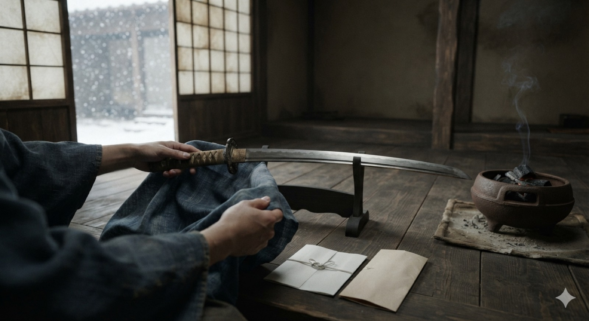
どこまでが紙にあるか
原文にあるのは太刀と書状と十二月十八日という日付だけで、雪も火鉢も部屋の様子も、この絵の側の想像である。大高筑前守
永禄元年1558〜 元亀二年1571
安東愛季は、分かれていた二つの家を一つにした当主である。湊家に男子が絶えると、檜山から弟の茂季を入れて継がせ、やがて湊を実質的に併せた。出羽北部を押さえた愛季は、東は比内から鹿角、南は由利、西は日本海の航路で庄内・越後・若狭へと手を伸ばしていく。
この外交の窓口を務めた一人が大高筑前である。永禄から元亀にかけての十数年、他国の重臣たちがそろってこの人に宛てて書状を送っている。
鹿角の国境で、脇差を贈る
鹿角は南部領で、安東は直接手を出せなかった。そこで間にある比内の浅利氏を介し、鹿角の在地の武士に会いたいと申し入れた。永禄元年1558の夏、両者は比内領の猿田川を越えた「中の平」で会い、鹿角からは五人、秋田からは四人が出た。秋田側の筆頭が大高筑前である。

どこまでが紙にあるか
原文は「比内猿田川を越、中ノたへニて見参被致候」とだけ書く。鹿角から五人、秋田から四人。人数はそのままだが、風景は想像である。一、土深井川は、出羽と奥州の代々定まった境でございます。永禄元年1558六月、秋田城之助殿の親である愛季が、比内の浅利殿を頼って、鹿角の五人の侍に会いたいと申し入れました。〔中略〕鹿角の侍は大湯四郎左衛門・柴内弥次郎・小平彦次郎・花輪中務・大里豊前、この五人が土深井を越えました。秋田の侍は愛季の名代として大高筑前・大浦縫殿助・武仁内久蔵・内平右衛門、この四人が比内の猿田川を越え、中の平で会見いたしました。そのとき、小枝指又左衛門の親である小次郎が会見の場の酌に立ちましたが、秋田の侍・大高筑前から、この小枝指小次郎へ脇差が引出物として贈られました。それより九十二年になります。
原文と典拠
一 土深井川、出羽奥州定代々境ニ御座候。永禄元年六月、秋田城之助殿親 親末、比内浅利殿ヲ頼、鹿角五人ノ侍ニ見参被致度由……鹿角侍ハ大湯四郎左衛門・柴内弥次郎・小平彦次郎・花輪中務・大里豊前 此五人土深井を越申候、秋田侍ハ親末ノ名代 大鷹筑前・大浦縫殿助・武仁内久蔵・内平右衛門 此四人ハ比内猿田川を越、中ノたへニて見参被致候。其時小技指又左衛門親小次郎 見参場ノ酌ニ立申時ニ、秋田侍 大鷹筑前より右小技指小次郎ニ脇差引出物ニ被致候。夫より九拾弐年ニ罷成候事
〔中略〕は当方が省いたところ。
『鹿角市史』資料編 第34集0052＝「鹿角比内境目ノ事 花輪領」。花輪領が土深井川を代々の国境と主張する由緒書で、末尾の「夫より九拾弐年ニ罷成候事」から慶安三〜四年1650-51ごろの作成と分かる。「親末」は「秋田城之助殿（＝実季）の親」と書かれており、愛季を指す（『鹿角志』は同じ人を「近季」と書く）／別伝本は『鹿角市史』第1巻0540・第5巻0047、『鹿角志』NDL pid 904128 コマ95
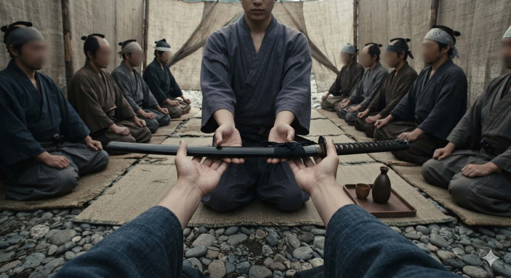
どこまでが紙にあるか
贈ったことは原文にある。陣幕も筵も杯も、この絵の側の想像である。その後
九年後の永禄十年1567十月十五日、大高主馬が六千余の兵を率いて谷内城を囲み、翌日は長牛城へ攻め寄せた（三章）。『聞老遺事』はそのありさまを「芥塵天ヲ翳テ汗血模糊ス」と書く。塵が天を覆い、汗と血で辺りが見分けられなかった、という意味である。
越後へ小鳥羽一羽、越後から白布二端
同じころ、越後の上杉家からも書状が届いている。永禄九年か十年の五月四日に、上杉謙信の重臣の直江政綱が筑前守に宛てて書いたものである。
お手紙拝見いたしました、かたじけなく存じます。このごろ書信が絶えて疎遠になっておりましたので、先ごろこちらから申し上げておきました。きっとお手元へ届いたことと存じます。さて、屋形の謙信へのご音信、さっそく披露いたしましたところ、ご懇意のほど本望である旨、直々のご返報がございました。ついては小鳥羽一羽をお心にかけてお贈りくださいました。こちらからは軽少ながら白布二端を進上いたします。まことに気持ちを表すまでのものでございます。当国で相応のご用があれば、仰せ下されれば疎かにはいたしません。この旨、お心得ください。恐々謹言。
永禄九〜十年ヵ 五月四日 政綱（花押）／大高筑前守殿
原文と典拠
（端裏）（墨引）
貴札拝見、忝奉存候、此比絶書信疎遠候条、先度令啓上候キ、定而可爲参着候、仍屋形（上杉謙信）江御音信、則令披露候處ニ御懇意本望之段、被及直報候、随而小鳥羽〈壱羽〉被懸御意候、従是雖軽少候白布〈弐端〉令進上之候、誠々表一儀迄候、當国相應之儀、被仰下不可有疎儀候、此旨可得御意候、恐々謹言、
（永禄9〜10年ヵ）五月四日 政綱（花押）
大鷹筑前守(1)殿
青森県史 中世2 資料999／音喜多勝氏所蔵 八戸湊文書 巻子11-8。本紙20.6×43.2cm、鳥ノ子の切紙。(1) は県史編者の註「本冊995号文書の宛所 大高四郎右衛門尉と同一人物」で、原文ではない。表記が「大鷹」であることに注意（→ 附）
檜山から越後へ贈ったのは小鳥羽一羽、越後からの返礼は白布二端である。直江は、筑前からの音信を謙信に披露したと書いており、筑前の便りは上杉の当主にまで届いていた。
翌日の日付で、同じ品を檜山の別の家臣に贈った書状がもう一通ある。
屋形の謙信へのご音信、それにつき我らあてのお手紙も畏んで拝見いたしました。ことさら小鳥羽一羽をお心にかけてくださり、過分にかたじけなく存じます。ついては軽少至極ながら白布二端を進上いたします。まことに気持ちを表すまでのものです。この旨、お披露をお願い申し上げます。恐々謹言。
永禄九〜十年ヵ 五月五日 宗緩（花押）／関戸和泉守殿
原文と典拠
（封紙ウワ書）「 本庄美作入道
関戸和泉守殿 宗緩」
屋形江御音信、依之我等御書畏拝見、殊更小鳥羽〈壱羽〉被懸御意候、過分忝次第候、仍雖軽少至極候白布〈弐端〉令進上之候、誠々表一儀迄候、此旨可預御披露候、恐々謹言、
（永禄9〜10年ヵ）五月五日 宗緩(1)（花押）
関戸和泉守(2)殿
青森県史 中世2 資料1000／同 巻子11-2。差出の宗緩＝本庄美作入道宗緩（本庄実乃）。(1)(2) は編者の註。(2)は関戸和泉守を「天文年間に若狭国小浜湊に駐在していた檜山屋形下国舜季家中 関戸豊前守久興の一族で、ここでは大高筑前守と共に下国愛季執事の立場で表記」とする。「執事」は編者がそう見たということで、原文にその語は無い。文書写真は県史の口絵
越後側は檜山の二人の家臣に、同じ品を贈っている。檜山の外交は筑前と関戸和泉守の二人で受け、越後の側も直江政綱と本庄宗緩の二人で返していた。
庄内の土佐林家からは、もっと具体的な依頼が来ている。元亀二年1571四月八日、三十年前に太刀を贈ってきた氏頼の父で、出家して杖林斎禅棟と号していた人物が、筑前守に宛てて書いた書状である。
在城していた衆は、ことごとくこちらへ出てまいりました。〔中略〕これによって庄内じゅうの武士が残らず出払って陣を立て、手が空きませんので、鉄炮を十四、五挺そちらへ差し下します。〔中略〕さて、羽黒山の造営のため、板柾やそのほかの材木などを調えたいので、小舟を差し下します。湊の津料ならびに山の口・川の口の諸役を免除していただけますよう、お心得をお願いします。
原文と典拠
在城候衆、悉此方へ被罷出候、……依之庄中之諸士拂而相立、無手透之条、鐡炮十四五丁差下候、……然者為羽黒山造営、板柾其外材木等可相求之条、小舩を指下可申候、湊津并山之口・川之口諸役預御免許候之様、可預御心得候
〔中略〕は当方が省いたところ。
青森県史 中世2 資料1017／湊學氏所蔵 秋田湊文書 68B-N28-180。原本の画像
どこまでが紙にあるか
数は原文のとおり。背後の筏と小舟は、同じ書状が求める板柾と材木である。荷を解く場面そのものは書かれていない。土佐林禅棟から、三か月半後の七月二十四日にも書状が届いている。
その後は音信が絶えておりましたので、内々にお懐かしく思っておりましたところ、お便りをいただき本望の至りです。さて、村山郡の鮭延口の件は、山形の最上義光から和談の取りなしがありましたので、無事に落ち着きました。ご安心ください。さて、檜山郡のお備えなども堅固とのこと、何よりのことと存じます。ことに、小野寺輝道殿のほうから和睦を望むお計らいがあると承り、私としても満足に存じます。きっと落着まで程ないことと存じます。変わった子細がございましたら後便でお示しください、本懐に存じます。委細は重ねて音信を通わすときに。不具。恐々謹言。
元亀二年ヵ 七月二十四日 杖林斎禅棟（黒印）／大高筑前守殿 御報
原文と典拠
其以来音絶之条、内々御床敷候處、示給本望之至候、仍（村山郡）鮭延口之儀、從山形（最上義光）一和之被逮取成候間、被属無事候間、可御心安候、然者貴郡（檜山郡）御備等堅固之由從何可然存候、殊ニ從小野寺（輝道）殿御和望之御刷有之由承、於吾満足候、定而落着不可有程候段存候、相替子細も候者後便示預、可為本懐候、委曲期重信之砌、不具候、恐々謹言
（元亀二年ヵ）七月廿四日 杖林斎禅棟（黒印）
大高筑前守殿 御報
青森県史 中世2 資料1018／秋田藩家蔵文書 湊金右衛門許季文書 51-18 の正文。原本＝湊學氏所蔵 秋田湊文書 68B-N28-181。同じ文書群に、この書状を双鉤塡墨で忠実に写した別の一点が併存する（県史編者の註）
四月の書状は物資と諸役の話、七月の書状は庄内の平定、最上の取りなし、小野寺の和睦といった情勢の知らせである。出羽各地の和戦の動きが、筑前のもとに集まっていた。宛所に「御報」とあるので、これは筑前からの便りへの返事であり、筑前の側からも書状を送っていたことが分かる。
由利で、絲桶山と蒸懸権現堂
愛季は外交と並んで戦もしている。庄内の大宝寺義氏とは、由利郡の領有をめぐって何度も争った。
さて、大宝寺義氏と愛季公とは、由利の「いとおけ山」「むしかげ権現堂」などという所を合戦の巷として、たびたび戦に及んだが、愛季公はついに不利を蒙らなかったという。このときの武将は、分内平右衛門・大高筑前・嘉成播磨・鎌田河内。むしかげは義氏方の砦である。互いに名のある者が討死した。
原文と典拠
扨茂氏（義氏）ト愛季公ト由利之いとおけ山 むしかげ権現堂抔ト云処か合戦之ちまたにて、度々およへども、愛季公終に利を失給ハスト言、此時之武将、ぶ（分）に内平右衛門、大高筑前、加成播广（播磨）、鎌田河内、むしかげハ茂氏（義氏）方ゟのとりて（砦）なり、互ニ歴々打死ス
青森県史 中世2 資料1309『秋田実季公御一代記』。丸括弧内は県史編者が補ったもので、原文にはない。原文は地名を仮名で「いとおけ山」「むしかげ」と書く——これを糸桶山・蒸懸と漢字に当てているのは同 1308-c『三春藩秋田家世臣譜』鎌田家の項「數戰絲桶山蒸懸権現堂等之地〈地在由利郡〉」のほうで、両者を突き合わせて同じ場所と見ている
その後
愛季は天正十五年1587、仙北の陣中で病にかかって死んだ。
家督を継いだ嫡子も同じ年のうちに死に、跡には十二歳の実季が残された。
大高主馬六千の大将
永禄八年1565ヵ 〜 永禄十一年1568
この章の記録は、敵方の南部家のものである。
回覧状
鹿角は南部領で、米代川をさかのぼった先の盆地にある。檜山からは東の奥、三戸からは西の端にあたる。檜山屋形の当主の安東愛季は、この地を欲しがった。
七年後、愛季は兵を出す前に、鹿角の侍たちへ回覧状を回した。
永禄八年1565七月、秋田の領主・愛季が鹿角の侍たちへ回覧状を回した。「このたび鹿角郡を切り取る。味方する者には、いまの知行を倍にして加増する」と、金銀・武具・木綿などの贈り物を添えて触れ回ったところ、大里・花輪・尾去・柴内・小平・大湯の六家は判を押して味方した。石鳥屋・谷内・長牛・小枝指・毛馬内の五家は押さなかった。そこで翌永禄九年、秋田勢が攻め寄せてきた。
原文と典拠
永禄八月（年ヵ）七月、秋田領主城之助近季（愛季）鹿角侍江廻文を以、此度鹿角郡可切取、味方被仕候においては先知一倍の加増可進由、金銀・武具・綿布等の音物添て被触けれは、大里・花輪・尾去・柴内・小平・大湯是等一味の加判しけれ共、石鳥屋・谷内・長牛・小枝指・毛馬内是等不被加判、依て同九年秋田勢寄せ来
原文は「永禄八月」と書き、県史の編者が「（年ヵ）」と校訂している。
青森県史 資料編 中世3 資料1830-c『鹿角大日堂故実伝記』（Ⅳ部 宗教関係資料／12。2012年刊）。鹿角郡小豆沢村・大日堂の第四十二代別当安倍典徹が安永十年1781に編んだ寺の故実書で、原本は失われ文久二年1862に鹿角郡谷内村の阿部重蔵が写した本が残る（秋田県鹿角市・阿部光男氏所蔵）。県史テキストDB。後世の編纂物である——本文はこのときの南部の当主を「信直公」と書くが、永禄年間の当主は晴政で、ここは誤っている。
この戦は、領地の奪い合いであると同時に買収でもあった。回覧状の誘いは「先知一倍」、つまりいまの知行を倍にするというものである。判を押した六家は加増の約束を得て、押さなかった五家が攻められた。
判を押した六家のうち、大湯・柴内・小平・花輪・大里の五家は、九年前に「中の平」で大高筑前と会った顔ぶれと同じで、新しく加わったのは尾去の一家だけである。一方、その席で筑前から脇差を贈られた小枝指は、判を押さなかった側にいる。
これは二つの本を突き合わせて当方が気づいたことで、どちらの本にもそうは書かれていない推測。
この戦の顔ぶれ
安東愛季あんどう ちかすえ
- 普段の役目
- 檜山屋形の当主。湊家を併せ、出羽北部を一手に握った
- この戦では
- 自身は出陣していない。回覧状を出し、兵を出した側
- 石高
- ——
大高主馬おおたか しゅめ
- 普段の役目
- 「家老」と明記される。この人の平時の役目を書いた紙は、この二字しかない
- この戦では
- 六千の総大将。永禄十年十月十五日、谷内城を攻め、翌十六日に長牛城へ
- 石高
- 書いた紙が無い
- 出どころ
- 『鹿角志』（鹿角由来集系）／『南部叢書』第2冊／大日堂故実伝記。三本とも南部側の記録
安保の三人衆あぼ の さんにんしゅう
- 普段の役目
- 鹿角の在地衆。長牛たちと同じ土地の顔で、愛季の誘いに乗って攻める側に回った
- この戦では
- 寄手（攻め手）の一党。矢文に歌を書いて城へ射込んだ
- 石高
- 加判した衆なので「先知一倍」＝本知の倍を約された側に入る
- 出どころ
- 「長牛縫殿助覚書」（『秋田県史』第1冊1917／『大日本地名辞書』下1907 が引く）／『鹿角志』コマ96
大里・花輪・尾去・柴内・小平・大湯鹿角の六家
- 普段の役目
- 鹿角の在地の侍。それぞれ村を持つ
- この戦では
- 回覧状に加判し、寄手と一つになって攻めた（南部から見れば内応・逆心）
- 石高
- 「先知一倍」＝いまの知行の倍の加増を約された
長牛縫殿助ながうし ぬいのすけ
- 普段の役目
- 長牛館の主。回覧状に判を押さなかった五家の一つ
- この戦では
- 籠城の大将。二年のあいだ城を保ち、永禄十年二月の戦では蠣崎右衛門を自ら討ち取っている
- 石高
- 永禄十一年に南部へ帰参し、本知の長牛村を安堵。粟田口吉光の腰物と国友の鉄炮を拝領
長牛彌九郎・長牛太郎左衛門
- 普段の役目
- 縫殿助の伯父と父。一門の長老
- この戦では
- 柵の中から下知（指揮）した。彌九郎は城前で討死
- 石高
- 落城ののち、太郎左衛門は三戸・光源寺の門前に置かれ、扶持を下された
長牛与九郎・掃部亟かもんのじょう
- 普段の役目
- 与九郎は一門。掃部亟は最上の牢人＝仕える家を持たない
- この戦では
- 二人とも「軍大将」。いずれも討死した
- 石高
- ——
石鳥屋九郎政友いしとりや くろう まさとも
- 普段の役目
- 判を押さなかった五家の一つ。石鳥屋の館の主
- この戦では
- 居館を落とされ、長牛へ合流して籠城
- 石高
- ——
岩手の七家／北・南・東・西越の四大将
- 普段の役目
- 南部の家中・一門。岩手勢は田頭・松尾・沼宮内・一方井・堀切・栗谷川・平舘
- この戦では
- 二度送られた援軍。いずれも多くを討たれて退いた
- 石高
- ——
城には侍だけでなく、石鳥谷・長内・三ヶ田・夏井・谷内・熊沢の六か村の百姓まで入っていた。村ぐるみの籠城である。
矢文の歌と、赤くなった川
攻めは永禄九年に始まったが、二年たっても長牛城は落ちなかった。石鳥屋の館は落ち、三戸から来た南部方の岩手勢（田頭・松尾・沼宮内・一方井・堀切・栗谷川・平舘）も大半が討たれて退いたが、長牛城は持ちこたえた。
この膠着のなかで、攻める側の秋田方にいた安保党の三人が、矢文に歌を書いて城へ射込んでいる。
寄手の歌。「長牛とは、まったくやせこけた牛によく似ている。虻に刺されて、尾を振っているばかりだ」。「安保（あぶ）」を虻に掛け、自分たちの名を使って相手をからかっている。
城からの返歌。「虻が三匹、やせ牛に食いついて、尾で叩き潰された。何の甲斐もない」。
原文と典拠
或時、寄手ノ中 安保黨三人ヨリ 矢文ニ歌ヲ書テ 長牛ノ城ヘ射込ケル、云
長牛ハ せたくれ牛に そも似たり
あふにさゝれて 尾をそふりけり
城中ヨリ返歌ニ
あぶが三つ せたくれ牛に 喰付て
尾にてひしかれ しやうこともなし
『鹿角志』内藤調一編1907NDL pid 904128 コマ96。もとは『鹿角由来集』（慶安四年＝1651 成立）
『鹿角志』はこの安保を「寄手ノ中」と書くだけで、何者かは書いていない。籠城した長牛縫殿助の家に伝わった覚書に、その名が出てくる。
秋田の下国愛季が領する阿仁郡は、神成馬頭を郡代として置いていた。鹿角郡を切り取ったのは、永禄八年七月のことである。安保の三人衆と、大里備中・花輪・柴内がこれに加わって一味した。石鳥谷・長牛・谷内・小枝指・毛馬内は加判しなかった。
原文と典拠
秋田下國近季領阿仁郡は、神成馬頭郡代に被指置、鹿角郡切取、永祿八年七月也。安保の三人衆、大里備中・花輪・柴内之に加り一味す、石鳥谷・長牛・谷内・小枝指・毛馬內は加判せず。
「長牛縫殿助覚書」——『秋田県史』第1冊1917NDL pid 950910が引くもの。同文は『大日本地名辞書』下巻1907pid 2937059、『姓氏家系大辞典』第1・2・3・5巻にも引かれる。原本を当方は見ていない——引用の孫引きである
覚書によれば、安保は鹿角の在地の一党で、愛季の誘いに乗って攻める側に回っていた。判を押さなかった石鳥谷・長牛・谷内・小枝指・毛馬内の五家と同じ鹿角の者である。城を囲んで歌でからかったのは、近隣の村の者だったことになる。
永禄十年二月末には激しい戦になり、城の前で縫殿助の伯父の彌九郎が討死した。攻める側でも、次のように多くの死者が出ている。
寄手の側では、愛季の手の者のうち、松前の弟・蠣崎右衛門を、長牛縫殿助が討ち取った。城方も羽高与惣・掃部亟・大賀丹波・軍大将の与九郎ら討死。秋田方も八木橋・杉沢・片山をはじめ多数が討死し、手負いは数知れない。
敵味方の死人と手負いの血が流れ、城の西にある西堂ヶ沢の小川が赤く濁って流れた。これより、その川を「スワウ川」、つまり蘇芳川と呼ぶようになった。
原文と典拠
寄手方ニモ、近季ノ内ニ松前カ弟 蠣崎右衛門ヲハ、長牛縫殿助討取ケル。城方ニモ羽高與惣・最上牢人掃部亟・大賀丹波・軍大將之與九郞始ニ討死ス。秋田方ニハ八木橋・杉澤・片山ナト始トシテ、其外數多討死シケル、手負ハ數シレス。
敵味方ノ死人・手負ノ血流レテ、城ノ西ノ方 西堂カ澤ノ小川 水赤フシテ流ルヽ故、是ヨリ スワウ川ト申ケル。
同上（コマ96）。大日堂故実伝記も同じ年の同じ月に「敵味方悉く討死して血流、城ゟ西堂か沢の小川水如蘇芳の赤く流、すおふ川と名付たり」と書く（別の筋の本が同じことを書いている）
このとき蝦夷地の蠣崎氏は秋田方として加わっており、松前の弟にあたる蠣崎右衛門がここで討たれた。
永禄十年十月十五日
二月の戦でも城は落ちず、三戸からは南部方の北殿・南殿・東殿・西越殿の四大将が二度目の援軍に入った。これに対して秋田方はそれまでより大きな軍を出し、その大将を務めたのが大高主馬である。
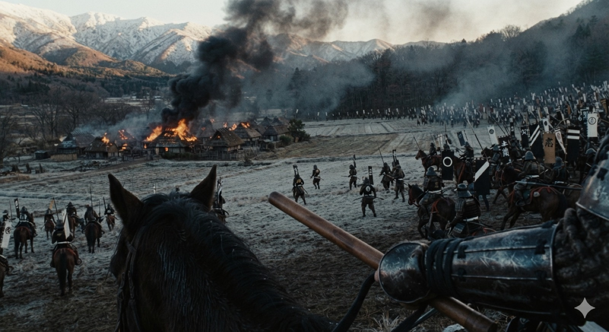
どこまでが紙にあるか
「在家ハ悉ク焼拂ケル」は原文にある。峰の初雪は暦から（旧暦十月＝新暦十一月下旬）。主馬の顔も装束も旗も、どの紙にも書かれていない。同じ年の冬、十月十五日、愛季の家老・大高主馬を大将として、秋田・比内・阿仁・由利・松前の勢に、鹿角で寝返った侍を加えた六千人で、谷内へ押し寄せて戦った。城は落とせなかったが、在家はことごとく焼き払った。
十六日の辰の刻、午前八時ごろ、長牛へ押し寄せ、敵味方入り乱れて戦い、互いにことごとく討死した。寄手も叶わず引き退く。北・南・東・西越の四大将も、人数を多く討たれて引き退いた。
原文と典拠
同年冬十月十五日ニ、近季カ家老 大高主馬 大將ニテ、秋田・比内・阿仁・由理・松前・鹿角逆心ノ侍始、人数六千人ニテ谷内ヘ押寄テ戦ケル。城ハ落サス有ケレトモ、在家ハ悉ク焼拂ケル。
同十六日辰ノ刻、長牛ヘ押寄、敵味方入亂テ相戦ヒ、互ニ悉ク討死スル。寄手モ不叶引退ク。北・南・東・西越四人ノ大将モ人数多ク討レテ引退ク。
同上（コマ96）。同じ日のことを、系統の違う本が三つ書いている。『南部叢書』第2冊 pid 1179163 コマ198「秋田近季家老大高主馬ハ、比内・阿仁・松前・由利及ヒ鹿角内応ノ士、六千餘兵ヲ率テ谷内城ヲ圍ミ擊ツ……芥塵天ヲ翳テ汗血地ニ模糊ス（塵埃が天を覆い、汗と血が入り混じって判然としない）」／大日堂故実伝記「又秋田勢近季家老大高主馬大将にて秋田・比内・阿仁・由理・松前の勢江鹿角一味の輩壱つに成て六千人」
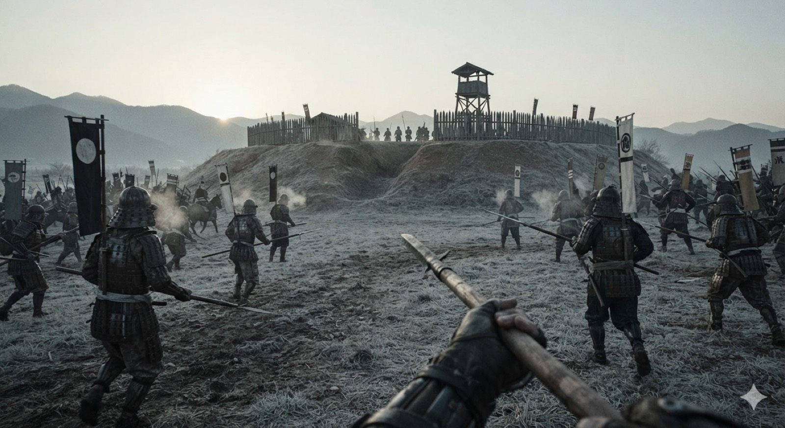
どこまでが紙にあるか
石垣も天守も無い土の城である。寄手の装束と旗がばらばらなのは、六千が秋田・比内・阿仁・由利・松前の寄せ集めだったことによる。- 平時の役目は「家老」、この戦での役目は「大将」である。
- 率いた兵は六千で、秋田（檜山・湊）・比内・阿仁・由利に松前の勢を加えた混成軍だった。愛季が動かせるほぼすべての兵を預かっていたことになる。
その後
攻めた側も援軍も退いた。その後、城に籠もった者は度重なる戦で討死して人手が足りなくなり、城主の父の太郎左衛門は、弟の彦六と妻子を連れて母衣（保呂辺）越えの山道から三戸へ落ちていった。長牛城は、守る者がいなくなって明け渡された。
こうして鹿角は愛季の手に入った。大日堂故実伝記は「鹿角郡近季手に入上ハ、長牛下ハ小坂両所に楯籠」と書き、手に入れた後は長牛と小坂の二か所に兵を置いて守ったという。
しかし翌永禄十一年1568、南部の当主が自ら出陣した。長牛へは九戸を大将に久慈・閉伊・浄法寺の勢が、小坂へは当主自身が来満路から向かった。降参を勧める使者を出すと鹿角の侍たちは皆降り、秋田勢も「一戦にも及ばず両所とも落ち行き」、南部は戦わずに鹿角を取り返した。判を押した六家も南部の側に戻っている。
大高相模守
元亀元年1570〜 天正十七年1589
元亀元年の寺社領改め
元亀元年1570、相模は石郷岡氏景（主膳）とともに、檜山・秋田両郡の寺社領を改め、寺社を興す奉行を務めた。愛季が湊を併せて出羽北部を押さえた直後のことで、領内の寺社の持ち高を調べ直して帳面にする、支配を固めるための仕事だった。
この段の根拠 — 原文をまだ見ていない
現代の研究書によれば、大高相模守と石郷岡氏景を奉行とする寺社領改めが元亀元年に行われたことが、いくつもの社寺の由緒書に書かれているという。当方はその由緒書そのものをまだ見ていないので、どの社のどの由緒書か、原文に何と書いてあるかは押さえられていない。この段で言えるのはここまでである。
典拠と注
羽下徳彦編『北日本中世史の研究』（吉川弘文館 1990）／男鹿市教育委員会『脇本城と脇本城跡』1994。※青森県史の文書では未確認。由緒書の原本も当方未見
『秋田の土と人』1931は、ある愛宕神社について次のように書く。
愛宕神社。加過突知命を祭る。安東愛季の創立で、のちに館主の大高相模守康澄、および多賀谷宣家から社領を寄進された。
原文と典拠
愛宕神社 加過突知命を祭る。安東愛季の創立にて、後の舘主大高相模守康澄及び多賀谷宣家より社領を寄進された
『秋田の土と人』土の巻（秋田郷土会 1931）NDL pid 1186517 コマ80。全文検索で本文とふりがな（「あんとうちかすゑさうりつのちくわんしゆおほたかさかみのかみやすすみおよたがやのぶいへ」）の両方を確認した。
★ただし、この愛宕神社がどこの村の社かを、当方は確かめていない。檜山の社だと決めてはいけない。多賀谷宣家は佐竹家臣で、『秋田県小学史略』1893は仙北・白岩に置かれたと書く。社の所在を押さえるのが先である。
この記事では、安東の家臣と佐竹の家臣が同じ社の寄進者として並んでおり、代替わりの後も社領が引き継がれたことがうかがえる。社の所在が分かり、棟札か社伝が残っていれば、元亀元年の寺社領改めを裏づけられる見込みがある。
湊合戦
愛季が死に、跡を継いだ嫡子も同じ年に死んで、十二歳の実季が残された。
湊家はもともと別の家で、愛季が弟の茂季を入れて継がせ、やがて併せていた。湊の側から見れば、家を取られたのと同じである。その茂季の子が湊九郎通季で、愛季の存命中は動けなかったが、当主が死に、跡継ぎが十二歳の従弟になると兵を挙げた。
湊方には多くの勢力が付いた。由利の赤尾津・仁賀保、仙北の戸沢、雄勝の小野寺、そして南部と、愛季の二十年の勢力拡大で押さえつけられていた周囲が、いっせいに湊方に回った。南秋田の在地の城主たちも同様で、八郎潟の東岸、面潟村字浦大町の城主の三浦兵庫頭盛永もその一人である。
黒川から、脇本へ
男鹿半島の付け根にある脇本城は、愛季が大きく改修した檜山方の拠点で、この戦で湊方に囲まれた。その包囲を破って城への道を開いたのが「相模」である。
小鹿島の脇本のお城が静まりましたこと、千万恐悦にたえません。八柳長門または新庄石見が舟越川のあたりで討死したとのこと、天罰は矢のごとくです。戸沢九郎をはじめ逆心の輩を、大高相模の軍勢で打ち返し、黒川方面から脇本へ通路などを開き、お城は無事でした。大いなる相模のご忠節、毎度のこととは申しながら、目を驚かせます。
原文と典拠
（小鹿島）脇本之御城御静謐、千万恐悦不斜候、八柳長門又ハ新庄石見、舟越川表にて打死之由、天罸如矢にて候、戸澤九郎（盛安）始逆心之輩、大高相模（康澄入道安叟）勢にて打返し候て黒川おもてより脇本へ通路等いたし、御城無恙、大なる相模御忠節、毎度と申なから驚目候
青森県史 中世2 資料1115 嘉成康清書状（宛所 賀成右馬・奈良岡惣五郎）／秋田県公文書館『秋田藩家蔵文書』巻32。丸括弧内は県史編者が補ったもので、原文にはない
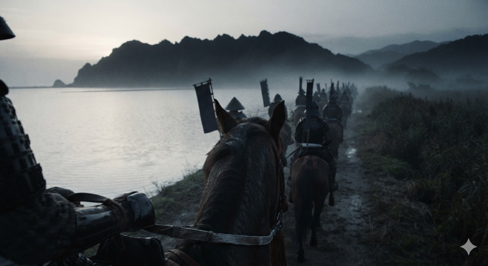
どこまでが紙にあるか
書状は「黒川おもてより脇本へ通路等いたし」とだけ書く。檜山から男鹿へは八郎潟の東岸を南へ抜けるほかない——経路は地理からの推定で、紙には書かれていない。黒川は八郎潟の南岸、脇本は男鹿にある。檜山から男鹿へ向かうには八郎潟の東岸を南へ進むしかなく、その道筋には真坂、夜叉袋、浦大町がある。相模の軍勢は、この道を通ったと考えられる。
書状は「毎度と申なから驚目候」、つまり毎度のことながら驚かされると書いている。相模がこのような働きをしたのは、これが初めてではなかったことになる。
筑前の死
戦の終盤、湊方に付いていた由利の赤尾津が和議を持ちかけた。実季方は家老三人を使者に立て、その筆頭が二章の大高筑前だった。
赤尾津が「まず和議の扱いをすべきだ」と言うので、家老の大高筑前、小介川右衛門大夫（秋田十左衛門の父）、同朋衆ながら勇士のきんあみ、この三人を九郎のもとへ遣わした。九郎は誠意をもって応ぜず、右の三人を討ち殺した。そこで赤尾津は腹を立て、後詰を勤めた。
原文と典拠
赤尾津先扱べしとて、家老大高筑前、小介川右衛門太夫、秋田十左衛門親也、きんあミ（阿弥）どうぼう（同朋）なから勇士也、三人九郎江遣す、九郎誠ニせずして右三人を打殺ス、そこニて赤尾津腹ヲ立、後詰仕
青森県史 中世2 資料1309／東北大本『湊・桧山両家合戦覚書』近世1 kins1-1-0015 は「九郎不信之討コロシタ」
使者を殺された赤尾津は腹を立てて実季方の後詰につき、戦の大勢はここで決まった。
浦城の三浦盛永
浦大町の城が落ちた経緯は、いくつかの形で伝わっている。
三浦盛永は、甲斐国の住人三浦遠江守盛実の末孫と伝えられ、出羽に来て秋田城介の配下となり、浦大町に城を構えた。まず、盛永の側に立って書いたものがある。
浦大町の城址は面潟村にある。甲斐国の住人・三浦遠江守盛実の末孫である兵庫頭盛永が当国へ来て、秋田城介の幕下となり、居城していた所で、盛永は愛季無二の忠臣であった。遺された孤児・友季を輔けて実季と戦ったが、武運つたなく陣に死んだ。
原文と典拠
浦大町城址 面潟村にあり、甲斐國住人三浦遠江守盛實の末孫、兵庫頭盛永當國に來り、秋田城介の幕下となり居城せる處にして、親季無二の忠臣たり、遺孤友季を輔け、實季と戰ひしも、武運拙く陣死した
『秋田の土と人』土の巻（秋田郷土会 1931）NDL pid 1186517 コマ68。OCRが荒く、引用は再確認を要する
別の記録は、盛永を討った側の名を書いている。
町に青松寺がある。浦大町の城主・三浦兵庫頭盛永の菩提所で、天正年中に盛永は檜山の大高相模守に殺された。
〔別の紙〕南秋田郡面潟村字浦大町の城主・三浦兵庫頭盛永が、天正年中のこと、檜山の大高相模守に殺された。
〔別の紙〕大高相模は浦大町の城主・三浦兵庫頭盛永を殺した。相模は名を康澄という。慶長七年、佐竹氏の遷封のとき、今宮摂津守と代わった。
原文と典拠
町に靑松寺あり 浦大町の城主三浦兵庫頭盛永の菩提所で 天正年中、盛永 檜山の大高相模守に殺さる
〔別の紙〕南秋田郡、面潟村字浦大町の城主、三浦兵庫頭盛永が天正年中のこと、檜山の大高相模守に殺された
〔別の紙〕浦大町の城主三浦兵庫頭盛永を殺す。相摸・名を康澄と云ふ、慶長七年佐竹氏遷封の時、今宮攝津守と代る
順に『文化の秋田』（秋田振興協会 1937）NDL pid 1110672 コマ108・118／『土崎港町史』1941が「土崎郷土史要より」として引くもの／太田亮『姓氏家系大辞典』1944。同趣を『大日本市町村案内』1936・『日本国勢総攬』1934も載せる。いずれもOCRで読んだもので、原本は未確認。菩提所を「青松寺」とするのはこの一本だけで、一日市の清源寺とは寺号が違う（後述）
さらに、討たせたのは実季だとする書き方もある。
天正のうち、秋田実季が檜山の大高に命じて三浦の居城を攻めさせ、兵庫盛永は敗れて…後の人はそこを産子坂と呼ぶ。
原文と典拠
天正中秋田實季 檜山の大高をして三浦の居城を攻めしめ、兵庫敗れて…後人産子坂と呼ぶ
…は当方が拾えなかったところ。
『秋田の土と人』土の巻1931NDL pid 1186517 コマ68。OCR
ところが、年代がまったく違う伝えもある。落城を湊合戦より三十年以上前に置き、相模守を愛季の代に檜山城を守った武将として書くものである。
弘治年中1555-58、浦の城主・三浦兵庫頭盛永の居城が落ちたため、その子千若丸が三浦右衛門尉を供に、富岳山楞厳院に一年ものあいだ籠もった。……そして霧山すなわち檜山の城主・秋田城介愛季は、土崎の城を討ってそちらへ移るにあたり、その臣・大高相模守に霧山城を守らせた。この人はそこに数年いた。
原文と典拠
弘治年中に至り、浦の城主三浦兵庫の守盛永居城陷落のため、息千若丸・三浦右衛門尉盛〓供仕、參籠すること一ヶ年に及ふと云ふ……而して霧山城主秋田城之介愛季は土崎の城を討ちて之れに移るために、其臣大高相摸守をして霧山城を守らしめ、同人の居ること數年
『山本郡探勝案内』金子出版部1928NDL pid 1030949 コマ25。楞厳院の縁起として語られる
その後 — 討たれた側
盛永の家はすぐには絶えなかった。『姓氏家系大辞典』第六巻は「其の子五郎盛末・押切に居る」と続け、『日本国勢総攬』も「其子五郎盛末押切に居る、即ち一日市なり」と書く。城主の子は、城を失った後、すぐ近くの一日市に住んだ。
しかし盛末も長くは続かなかった。『大日本地名辞書』は「既にして盛末、其の臣小和田甲斐に弑せられ、三浦氏絕ゆ」と書き、家臣に討たれて三浦氏は絶えたという。『日本国勢総攬』は、一日市には「三浦氏の石塔のみ」が残ると書いている。
その一日市に、花嶽山清源寺（曹洞宗）がある。天正十二年1584の創建で、秋田実季が三浦盛永の霊を弔うために建てたと伝えられる。討った側の当主が討たれた側を弔うために建てた寺で、いまは依頼者の家の菩提寺である。
依頼者と同じ旧面潟村の旧家が弘化二年1845に写した軍記によれば、寺で弔われているのは父の盛永ではなく、子の五郎盛末である。寺の前身は石頭院といい、もとは三浦氏の牌所で、それを盛末が一日市村へ移したという。詳しくは補章に書いた。
その後 — 勝った側
湊九郎通季は敗れた。『御一代記』は、実季が「湊の城へ移り居城し給ふ。檜山城には舍弟比內忠二郞實泰を置れ」と書く。二つの家の争いは檜山方が湊を併せる形で終わり、当主の実季自身が湊へ移って、以後「秋田城介」を名乗った。
檜山は本拠ではなくなり、城代が置かれる城になった。五年後の文禄三年の帳には、代官所を預かる者として「野代城代 大高傳右衛門」の名が載る。
この「相模」は誰か — 身元が決まっていないこと
この人物の身元は決まっていない。ただし、実在しなかったとは考えていない。「大高相模（守）」という呼び名は、天正十七年ごろの書状の写、十七世紀の軍記二系統、元文五年1740の記、近世の故実記と紀行、弘化二年写の軍記、明治以降の編纂物十一点と、時代も系統も異なる記録に繰り返し出てくる。一度の誤写ではこの広がりは説明できないので、この頁では実在した人物として扱う。
同時代に近い記録は、上に引いた嘉成康清の書状一通だけで、それも江戸時代の写である。しかも、その「大高相模」を別の人物と見る読み方がある。安東一門の下国相模入道安叟で、文禄三年の連署起請文に「安東相模入道 安叟」と自ら署名し、別の文書では「檜山城留守居」「下国家一門」と説明される人物である。青森県史の編者はこの二人を同一人物と見て註を付けたが、それは編者の判断で、書状そのものに書かれていることではない。どちらとも決まっていないのが現状である。
実名も定まらない。『能代故実記』は「勝澄」と書き、同じ本の数行後の地の文では「康澄」、『秋田沿革史大成』は「廉澄」と書く。
「康澄」という名の出どころも分かっていない。補章で取り上げる、八郎潟の旧家が弘化二年に写した軍記はこの人物に一章を割いているが、目録でも本文でも「大高相模守」とだけ書き、四か所のどこにも「康澄」の名はない。近代の郷土史がそろって書くこの実名の出どころは、まだ突き止められていない。
典拠と注
青森県史 中世2 資料1115・1309・1111・710／『能代故実記』（太田亮『姓氏家系大辞典』第2巻 NDL pid 1123842 が引く）／『秋田沿革史大成』下 pid 763199 → 本編「三 相模の一通」に詳しい
大高相模守
愛季の代 〜 慶長七年1602
山本郡の案内書には、相模守が家臣を召し抱え、土地を与え、代替わりの後に百姓の訴えを聞く話が残っている。
話は、檜山（霧山）城の城主が死んだところから始まる。城主は南部大膳大夫から奥方を迎え、化粧料として鹿角郡二万石を付けられていたが、急に亡くなり、奥方は泣く泣く故郷へ帰った。空いた城が荒れるのを惜しんだ土崎の安藤太郎が、家臣の大高相模守を城に置いた。
そこへ、武田信玄の一族の者が流れてきた。
武田家の没落後、寄るべもなく諸国武者修行として福浦村へ来たところ、霧山の城主・大高相模守がこれを召し抱えた。名を聞けば武田重左衛門という。話が合って、旧友のようになった。……「わが領内の八森というところに古い館がある。もし幸いにもそこへ入って、あの津軽との境口を守り、あわせて野武士どもを鎮めてくださるなら、私が取り計らおう」と言うと、重左衛門は大いに喜んだ。
原文と典拠
其の沒落後、寄るべき所なく諸國武者修行として福浦村に來りければ、霧山の城主大高相模守は之を召し、其の名を聞けば武田重左衛門といふ。四方八方の話より意氣相投じて、舊友の如くなりにけり。……我が領内八森といふ所に古き舘あり、若し幸に此所に直り、彼の津輕の境口を守り、併て野武士等を鎭め給はば、吾れこれを取計らんと申しければ、重左衛門大に喜び……
〔中略〕は当方が省いたところ。
『山本郡探勝案内』NDL pid 1030949 コマ55-56
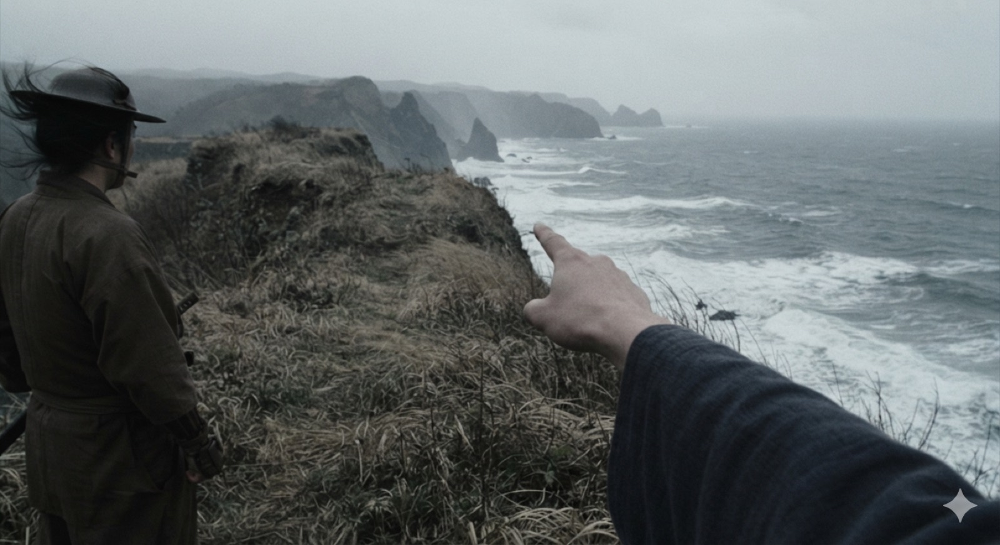
どこまでが紙にあるか
「我が領内八森といふ所に古き舘あり」——指しているのは津軽との境である。崖も晩秋も、この絵の側の想像である。相模守は、重左衛門が信玄の一族として確かな家筋であることを確かめたうえで、本人を連れて土崎の秋田城介を訪ね、承諾を得た。城介も喜び、武田は八森の本館に入って、家臣の長田三郎・高田四郎とともに近くの村から知行を取り立て、館を守った。百姓は武田の威勢を恐れ、野武士は逃げ去ったという。
話はそのまま慶長七年に続く。佐竹義宣は秋田に入ると、領内の知行を正しく把握するために各地の城主に書き上げを命じ、秋田城介も配下に同じ命を出した。すると八森の百姓たちが武田のもとへ来て、次のように言った。
…は「あまり正しく書き上げられては百姓どもの迷惑ですので、従来のままにしていただきたい」と言ってきたので、武田殿はこれを相模守に問い合わせた。相模守は「不正の書き上げでは後々のためによろしくない。必ずありのままに書き上げよ」…
原文と典拠
…は余り正しく書き上け申されては百姓共の迷惑なれば從來のまゝにせられたしとありければ、武田殿は之れを相模守に聞き合せけり、相模守は不正の書き上げにては後々のため宜しからず、必ず有りのまゝ書き上げよ…
…は当方が拾えなかったところ。
『山本郡探勝案内』金子出版部1928NDL pid 1030949。NDL次世代デジタルライブラリーの全文検索で得た断片で、前後は当方未見である
八森という地名は、別の記録にも出てくる。菅江真澄は文政四年1821の『上津野の花』に、割注で「大高氏の末 出羽の山本ノ郡八森に在り」と書いている。相模守が武田重左衛門を置いたと語られる土地に、二百二十年後、大高の末が住んでいたことになる。
檜山の大高家のうち「相模守の末」と伝えるのは、荷八田（吹越村）の伝右衛門家である（八章）。八森はそこから海沿いに北へ行った、津軽との境にある。同じ姓の家が二つの土地で語られ、どちらも相模守に結びつけられている。
大高傳右衛門野代城の城代
天正十八年1590九月
天正十七年の湊合戦（四章）の翌年、内乱で揺れた秋田家の隙を突いて、南部勢がまた攻め入ってきた。
大高傳右衛門おおたか でんえもん
- 普段の役目
- 野代（能代）の城代。『秋田沿革史大成』は二年前の天正十六年頃から城代だったと書く
- この戦では
- 大館城に旗を押し立てて、南部勢の退路を塞いだ。別の本は「乗っ取った」と書く
- 石高
- 四年後の帳に「野代城代 大高傳右衛門代官所 三百八十六石七斗一升三合」
嘉成播磨守／嘉成右馬頭
- 普段の役目
- 米内沢（阿仁）の領主。右馬頭は播磨守の甥で、鬼神のようだと言われた若武者
- この戦では
- 反撃の先鋒。右馬頭は二十余騎とともに討死する
- 石高
- ——
嘉成常陸介嘉成康清ヵ
- 普段の役目
- 右馬頭の父。このとき六十余り
- この戦では
- 息子の弔い合戦に、白髪に兜で駆けつける。この新手で南部勢が崩れた
- ここが繋がる
- 前年（天正十七年）の湊合戦で「大高相模の御忠節、毎度と申なから驚目候」と書き送ったのが、この嘉成康清である（青森県史 中世2 資料1115）。宛所の「賀成右馬」は、県史編者が重盛と比定する人物で、この右馬頭と同じ人なら、書状の受取人がその翌年に討死したことになる推測
比内の土民ども
- 普段の役目
- 村の百姓
- この戦では
- 南部勢の行手を遮り、大館城を攻め落とした。侍ではない者が城を落としている
五城目兵庫
- 普段の役目
- 実季の臣。つまり身内である
- この戦では
- 主君を恨んで南部方を語らった。きっかけを作った人
大光寺左衛門佐／八戸弾正少弼／北弾正
- 普段の役目
- 南部の家中。北弾正は武大将
- この戦では
- 西道山を越えて比内へ攻め込み、大光寺が大館城を奪う。崩れたあとは北弾正が殿軍を勤めた
きっかけは家中から出た。実季の家臣の五城目兵庫が主君を恨んで、南部方の大光寺左衛門佐と八戸弾正少弼を誘い、天正十八年九月に西道山を越えて比内へ攻め込んだ。実季は敗れ、大光寺が大館城を奪った。
反撃は比内の南から始まった。米内沢の嘉成播磨守と、その甥の右馬頭が先鋒を務め、実季が後陣に立った。しかし、日ごろ鬼神のようだと言われていた右馬頭は、二十余騎とともに討死した。
息子の討死を聞いた父の常陸介は、六十を過ぎた身で、わずかな手勢を連れて戦場へ駆けつけた。
常陸介はこれを聞いて、「わが年若い子を先に立てて死なせて〔中略〕この年六十余りまで、敵に押し付けられるさまを見せたことはない」〔中略〕白髪に兜をかぶり、取る物も取りあえず、手の者十四、五騎を率い、三柏の紋を染めた大旗を差させて、揉みに揉んで馳せ付けた。
原文と典拠
常陸介是ヲ聞テ、我弱年ノ子ヲ先ニ立〔中略〕今年六十餘リ迄敵ニ押付ヲ見セシタメ〔中略〕白髪ニ兜ヲ戴キ、取物モ取敢ス手ノ者十四五騎ヲ率シ、三柏ノ紋染タル大旗ヲサセ、モミニ揉テ馳付
〔中略〕は当方が省いたところ。
『鹿角志』内藤調一編1907NDL pid 904128 コマ73。『奥羽永慶軍記』系。同文は『史籍集覧』第8冊 pid 3431175
戦い疲れていた南部勢は、この常陸介の手勢に突かれて崩れた。北弾正が殿を務めて大館城へ引き揚げようとしたが、南部勢が常陸介と戦っているあいだに、大館城は比内の土民たちに攻め落とされていた。
あまりに強く追い討たれたので、北弾正は取って返し、敵を一人槍で突き倒して殿軍を勤めながら退いた。ところが大館城は、すでに土民たちが行手を遮って攻め落としており、入れ替わって野代の城主・大高傳右衛門の旗が押し立てられて防いでいる。城へ引き揚げることが叶わず、そのまま西道へと退いていった。
原文と典拠
餘リニ强ク追討レ、南部ノ武大將北彈正取テ返シ、敵一人鎗ニテ突倒シ殿シテ引ケルカ、大舘ヲハ土民共カ遮リテ攻落シ、ハヤ入替リテ野代ノ城主大高傳右衛門カ旗ヲ押立防ケレハ、城へ引事叶〔ハ〕スシテ、直ニ西道ヘト引ニケリ
同上（『鹿角志』コマ73）。『秋田沿革史大成』下1898pid 763199 コマ501も「此隙ニ土民共大舘城ヲ攻メ落シ、能代城代大高傳右衛門旗ヲ押シ立テ防ク故、南部勢ハ白根西道ヨリ引キ退ク」
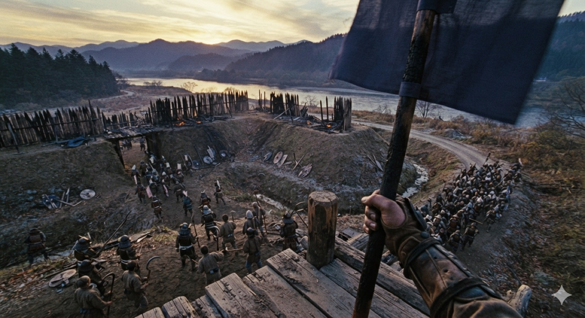
どこまでが紙にあるか
城内に鎌や鳶口を持った者が混じっているのは、原文が「土民共カ遮リテ攻落シ」と書くからである。旗は無紋にした——大高の家紋は、どの紙にも書かれていない。空いた大館城に入って旗を立てたのが、野代城代の大高傳右衛門である。常陸介が野で南部勢を崩し、その隙に伝右衛門が城を押さえたことで、南部勢は戻る城を失った。
同じ本の別の箇所は、さらに踏み込んで書いている。
大光寺・五城目は敗北した。大館は秋田の臣・大高傳右衛門が乗っ取ったという。
その後、阿仁の嘉成常陸と同じく播磨守がこれを攻め、秋田城之助が後詰をした。大館の城は、能代城主・大高傳右衛門が乗っ取った。
旗を立てて防いだのではなく、伝右衛門自身が城を取ったと書いている。
原文と典拠
大光寺五城目敗北ス 大舘ハ秋田ノ臣大高傳右衛門乘取ト云
其後阿仁嘉成常陸、同播磨守攻之、秋田城之助後詰をなし、大館の城は能代城主大高傳右衞門乘取
『秋田沿革史大成』下 pid 763199 コマ504／『秋田叢書』第2巻1933pid 1174015
その後
戦の後、実季は比内に一族の老臣の秋田勝蔵を置き、自分は湊へ戻った。比内はその後、秋田家の飛地として押さえられ、十二年後に佐竹家が入るときも、大館城は秋田勝蔵から佐竹家臣の赤坂朝光へ引き渡された。
『秋田沿革史大成』は「天正十六年頃、城介ノ臣 大高傳右衛門 城代タリ」とも書く。これによれば、伝右衛門は大館の戦の二年前から野代（能代）の城代だった。四年後の文禄三年1594八月の知行高帳にも、「野代城代 大高傳右衛門代官所 三百八十六石七斗一升三合」と、野代城代の肩書きで出る。
大高四郎右衛門
慶長五年1600
天正十八年の奥羽仕置で、出羽の秩序は秀吉のもとで組み直された。十年後、秀吉の死をきっかけに天下は再び動き、慶長五年、出羽では小野寺義道が上杉方に付いた。それを見て、由利郡矢島の者たちが一揆を起こした。
実季がこの一揆に差し向けた三人のなかに、大高四郎右衛門の名がある。
小野寺が謀叛を起こすのを見て、由利郡の矢島という所の者どもが一揆を起こし、仁賀保兵庫挙誠の所へ攻めかかる手だてがあるという知らせが来た。そこで、城介の家老ならびに足軽大将である田村作右衛門・檜山作兵衛・大高四郎右衛門といった者に、鉄炮だけを添えて差し向けた。ひとまず静まったが、こんどは矢島の奥の山中、自然古という要害に立て籠もった。事が大事になってきたので攻めかかり、即座に打ち破って一揆勢百余人を成敗し、事を静めた。
原文と典拠
小野寺謀叛を仕るヲ見て、八嶌〈由利郡矢島〉と申所之もの共一揆を起し、仁賀保兵庫〈挙誠〉所江取懸可申手たて有之由申来候に付て、城之介家老并足輕大将田村作右衛門・檜山作兵衛・大高四郎右衛門抔と申ものに鉄炮計り相添さし遣し、一往事静り申處、此度は八嶌の奥の山中自然古〈由利郡笹子〉と申要害江取籠り、事既ニ大事に成候に付て自然古江とりかけ、即時に打破て一揆原百余人成敗仕られ、事を静申候
青森県史 中世2 資料1310『秋田実季・最上義光対決之次第』／橋元家文書・三春町歴史民俗資料館寄託。〈 〉内は県史編者が補ったもの
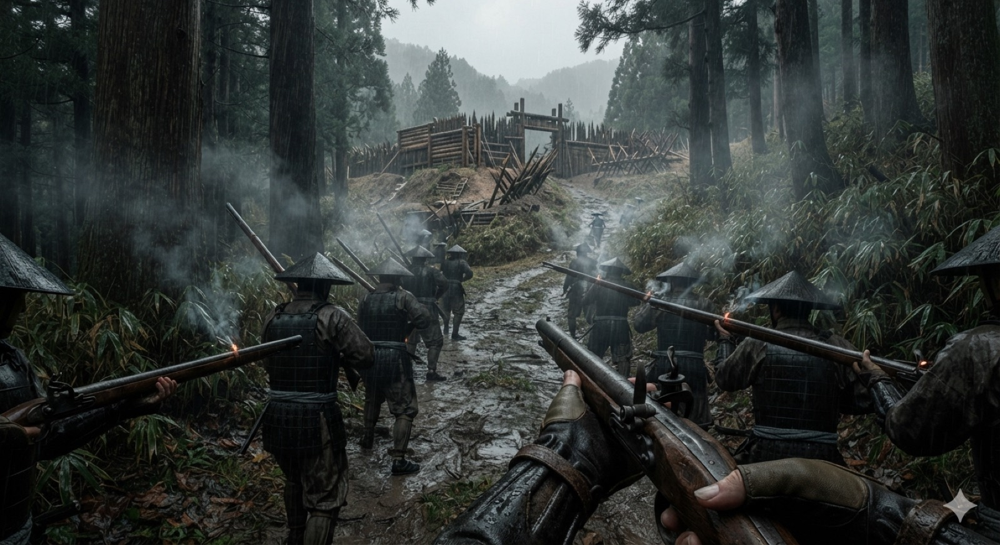
どこまでが紙にあるか
原文は「鉄炮計り相添さし遣し」——槍がほとんど無いのは、そのとおりに描いたものである。この四郎右衛門は、六年前の帳に「鉄炮之者 大高四郎右衛門指南」と書かれた人物で、二十二人の鉄炮衆を預かっていた。鑓衆は大高甚介が三十六人を預かっており、大高家は檜山安東の軍で鉄炮衆と鑓衆の両方の指揮を受け持っていた。
大高安時
天正十六年1588〜 慶長七年1602
慶長七年五月三日の書状
伝右衛門自身が書いた書状が、一度だけ残っている。
若狭国小浜の羽賀寺に宛てた二通で、表題は「伽藍修理ノ為丈木進上ニ付」、伽藍の修理のために丈木を送るという事務的な書状である。その差出は次のとおり。
「大高伝右——安時（花押）」。羽賀寺様へ。表題は「伽藍修理のため丈木を進上するにつき」、二通（一紙と折紙）。
通称の下に実名が書かれ、花押が据えられている。この六十年の話のなかで、大高の誰かが自分で書いたものが残っているのは、これだけである。
原文と典拠
〈大高傳右〉安時（花押） 羽賀寺様
表題「（伽藍修理ノ為丈木進上ニ付）」二通（一紙・折紙）
羽賀寺文書（福井県小浜市）／福井県文書館 data_id 011-521364・011-521571／青森県史 中世2 資料1231
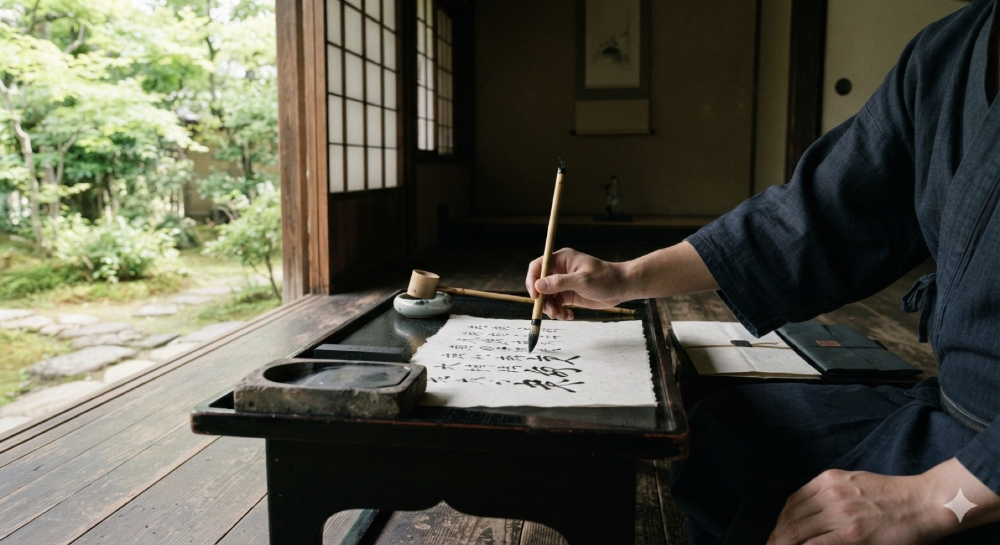
どこまでが紙にあるか
慶長七年五月三日、若狭・羽賀寺へ丈木を送る書状二通。差出に花押があることは原本の記載にある。部屋の様子は想像で、実際の檜山の館はこれより簡素だったと思われる。羽賀寺は、蝦夷地を追われた安東康季が私財を投じて再興した安東家の氏寺で、再興は百六十年前のことだった。その寺へ、安東家の家臣が木を送っている。
木を送ることは、この一族の本来の仕事だった。檜山安東は、米代川の上流から材木を切り出して流し下ろし、山の口・川の口で役を取る家である。三十年前に庄内の土佐林禅棟が大高筑前に宛てて「為羽黒山造営、板柾其外材木等可相求之条、小舩を指下可申候」と書いてきたのも、同じ仕事への依頼だった。
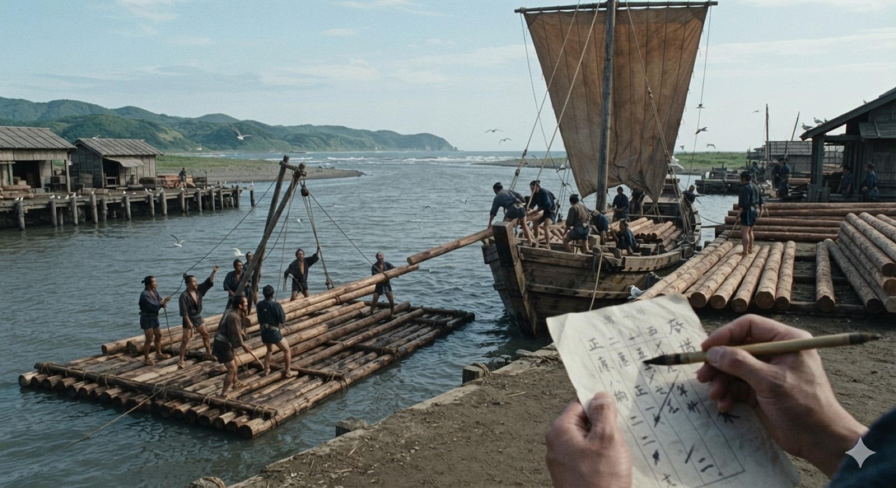
どこまでが紙にあるか
先祖が再興した寺へ、その子孫の家臣が木を届けている。書状は木を送るとしか書いておらず、湊の光景は想像である。この書状の出た慶長七年は、秋田実季が常陸国宍戸五万石へ移され、代わって佐竹義宣が秋田に入った年である。百五十年近く続いた檜山屋形は、この年に終わった。
城の引き渡し
同じ年、城は佐竹方に引き渡された。地誌は、檜山と能代の引き渡しを別々の人物に割り振って書いている。
国替えの際、檜山の城は実季の臣・大高相模守を置いて渡させ、義宣のほうは家臣の今宮摂津守にこれを受け取らせた。そのうえで小場式部義成を城代として置いた。〔中略〕
○能代浦には営を築き、秋田城之助実季の臣・大高傳右衛門が城代であった。義宣は家臣の大窪参河守光久にこれを受け取らせた。
原文と典拠
遷封ノ際、實季ノ臣大高相模守ヲ置キ渡サシメ、義宣ニハ家臣今宮攝津守ヲシテ之ヲ受取ラシム。以テ小塲式部義成ヲ置ク。……
○能代浦ハ營ヲ築キ、秋田城之助實季ノ臣大高傳左衛門城代タリ。義宣ハ家臣大窪參河守光久ヲシテ之レヲ受取ラシム
〔中略〕は当方が省いたところ。
『秋田沿革史大成』上（橋本宗彦 1898）NDL pid 763198 コマ43。「傳左衛門」は「傳右衛門」の誤写
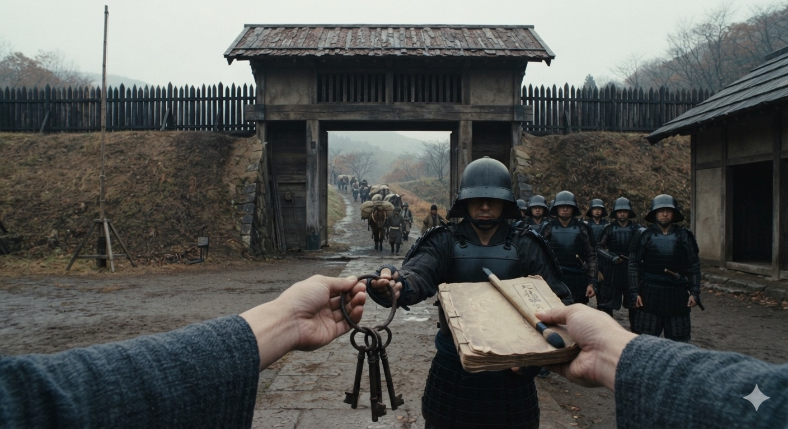
どこまでが紙にあるか
渡した者と受け取った者の名は紙にある。引き渡しの所作そのものは、どの紙にも書かれていない。鍵束と帳面も、この絵の側の想像である。門の外を出てゆくのは、去る側の荷駄である。檜山城の引き渡し
檜山城の引き渡しをしたとされるのは「大高相模」で、軍記はこの場面にこの人物を置いている。
檜山の城は、秋田実季の郎等・大高相模があって、これを渡した。
檜山城の最期については、次の記事もある。
檜山城は康永年間から天正まで代々安東氏が居た。天正の末、大高康澄が守っていたとき、攻められて火を掛けられた。
原文と典拠
此城、康永より天正迄安東氏代々居る。天正の末、大高康澄守りしとき、攻られて火を掛けらる
『山本郡探勝案内』NDL pid 1030949 コマ53。同じ段が典拠として挙げるのが元文五年1740池内益雄の記と檜山の給士・白坂高寛の記である
その後
文禄三年の帳に載る大高は九人で、そのうち主家に従って常陸へ移ったと文書で確認できるのは、甚介と又兵衛の二人だけである。
常陸へ移った大高甚助家は、宍戸からさらに陸奥三春へ移り、そこで八代続いた。通字は「時」である。初代の知行四百十四石三斗三升二合は、文禄三年の帳の数字と一石まで一致する。安永元年1772、七代の孚時が武器を紛失して役を解かれたとき、その処分には「但議祖勲宥恕従軽」、先祖の功に免じて罪を軽くするとある。
檜山に残った側については、久保田藩の「諸士系図」千二百七十五家にも、文化二年に提出された系図千八百三十一点にも、大高姓は一件もない。大高家は佐竹家の家臣にはならず、武士をやめて田を開いたと考えられる。
『能代市史年表』は「檜山城代 大高相模守の弟新助、農に下り開田に着手。荷八田の名、新助の初田から起る」と伝える。この家はその後代々「伝右衛門」を名乗り、村の肝煎を務めた。二百年後の『能代市史稿』第四輯は「大高相模守カ末孫ナリトゾ 伝右エ門ト云フ者 武具家系等ハ先年自火ニテ焼亡スト云フ 今幽ニ殘レリ 吹越村荷八田ヨリ十丁西 高十五石」と書く。大高相模守の末孫という伝右衛門の家で、武具や系図は先年の火事で焼け、いまはわずかに残るだけ、場所は吹越村荷八田から十丁ほど西、高は十五石、という内容である。
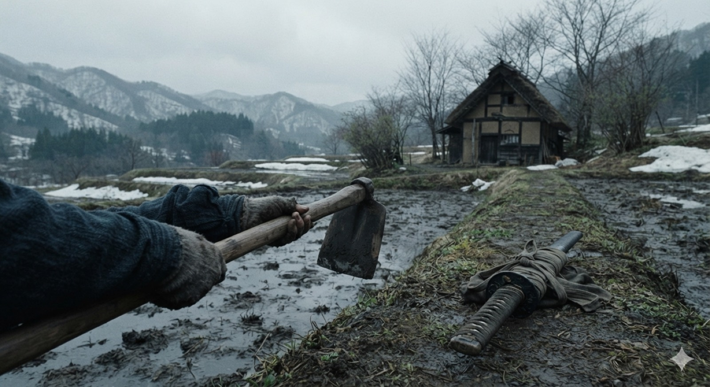
どこまでが紙にあるか
佐竹の家臣にはならなかった家は、刀を置いて田を開いた。鍬と刀を並べたのは象徴で、記録ではない。二百年後、この家は高十五石である。千田秋田軍記依頼者と同じ村の旧家が写した本
弘化二年1845三月七日 写
この章で取り上げるのは、南秋田郡八郎潟町小池の旧家、千田家に伝わった『秋田軍記』の写本で、小池は旧面潟村の内、つまり依頼者の在所と同じ村である。
典拠と注
等級は軍記。奥書は「弘化貮乙巳三月七日」で、年号と干支が噛み合う。原本は焼失していて、いま読めるのは写真複写版の画像だけである。年次は壊れている（当主の没年も国替えの年も実在の年表と合わない）ので、この帖はこの本から年を一つも採らない。複写版の画像と、中冨たつ子氏が校訂した訳を、児玉氏（異業種交流会クライン）が公開している。複写版の公開ページ。以下の引用は、その画像に対する当方の判読である（崩し字。〔 〕は自信のない字）。訳文そのものは校訂者・公開者の著作なので、ここには引かない。
檜山落城と男鹿からの反撃
この本では、湊九郎が叛いて諸城が湊方に付くなか、大高相模守は檜山城に籠もる。二千余騎に囲まれて一日一夜戦った末に城は落ち、相模守は城に火をかけて男鹿へ落ちのびる。そこから出撃して船越川で九郎を破り、湊を攻め落として、九郎を仙北の境まで追う。
巻頭の目録にも、この筋がそのまま並んでいる。
〔目録〕一、女正〔読み未詳〕、檜山・桐山の城を攻める件。付けたり、黒熊の件。／一、桐山城が落城し、大高相模守が男鹿城へ参る件。／一、大高相模守が、船越川で九郎殿を〔討つ〕…／一、兵庫守が自害する件。付けたり、石頭院が自害する件。
〔本文〕…大高相模守は男鹿城へ馳せ参じ…／そのとき相模守は当主親末の代官として…
〔本文〕馬場目玄番正が…檜山城へ向かう…／相模守は大いに驚き…
目録は一条ずつ「〇」で始まり、「支」は「事」のくずしである。
原文と典拠
〔目録〕〇 女正 檜山・桐山城責ル支 附 黒熊カ支
〇 桐山城落城 大高相模守 男鹿城ニ参ル支
〇 大高相模守 船越川ニテ九郎殿〔討〕…
〇 兵庫守自害 附 石頭院自害支
〔本文〕〇柳 大高相模守 男鹿城ニ馳参シ ／ 其時 相摸守 親末代官トシテ
〔本文〕馬場目玄番正…檜山城ェ向フ ／ 相摸守 大キニ驚キ
…は、虫損や墨の薄れで読めなかったところ。
『千田秋田軍記』千田家本 複写版 genpon_04（目録）・13・14・12（本文）。当方の判読
どこまでが紙にあるか
軍記が語る場面で、同時代の紙には無い。この本は彼を討たせていない——目録に自害の項が立つのは三浦兵庫守と石頭院の二人だけである。書状と軍記
天正十七年の湊合戦のさなかに、嘉成康清という武将が味方に宛てて書いた書状がある。秋田藩に写しが伝わったもので、次の四つのことが書かれている。
- 男鹿の脇本城が、ようやく静まったこと
- 八柳長門と新庄石見が、船越川のあたりで討死したこと
- 戸沢九郎をはじめとする「逆心の輩」がいたこと
- その包囲を「大高相模」の軍勢が打ち返し、脇本への道を開いたこと
この軍記も、同じ四つのことを同じ順に語る。当主は男鹿の脇本に籠もり、八柳長門守と新庄石見守が討手の大将として船越川で敗れ、戸沢が叛く側に加わり、大高相模守が男鹿から出て船越で勝つ。
一方は秋田藩に伝わった書状の写、もう一方は八郎潟の百姓の家が写した軍記で、伝わった経路はまったく違う。その二つが、同じ戦の同じ場面を同じ人物の名で語っている。「大高相模」という人物は、一つの記録だけに支えられているわけではない。
典拠と注
ただし、二本が完全に独立だと証明したわけではない。書状は近世の写、軍記は弘化二年の写で、どちらも同時代の紙ではない。細部も合わない——書状は八柳・新庄を討死とし、軍記は生き延びさせる。軍記がこの書状か、その元になった話を知っていた可能性は残る。
一日市の寺
浦城が落ちて三浦兵庫守が自害した後、その子の五郎盛末は呼び戻されて押切に城を構えた。しかし家臣の小和田甲斐守に讒言され、十二月二十八日、湊で待ち伏せに遭って鉄炮で討たれた。
その後、祟りが続いたので、占いをさせ、仏師に五郎の御影を作らせて、押切に御堂を建て若宮権現として祀った。戒名は花嶽院殿心公大居士で、討たれた日にあたる毎月二十八日が縁日になった。
さらに社領を付けて寺号を花嶽山石頭院と改め、松原の補陀寺九代の草庵和尚を移して弔わせた。後に佐竹義宣が鷹狩りの途中、一日市村のこの寺で昼休みを取り、住持に山号と寺号を尋ねて、「青原・石頭」が本則にあることから寺号を改めさせたという。
その〔須〕ヶ、〔石〕頭院は、父・兵庫守の御〔菩〕提…の御所であるといって、先年、その〔堂〕を一日市村へ移〔した〕。
（別の面）五郎の亡魂が…崇り…親末殿がお聞きになり…五郎殿の御影を拵えて…〔押〕し建立なされ…神に（祀った）。
（別の面）花嶽山石頭院を改〔め〕／松原補陀寺の九代の和尚の草庵／このたび二十か二百の領を付けるべし。
原文と典拠
其〔須〕ヶ 〔石〕頭院ハ 父 兵庫守 御〔菩〕提…ノ御所ナリト
先年ノ〔堂〕ヲ 一日市村ェ 移〔ス〕
（別の面）五郎カ亡魂…崇リ…親末殿 聞召…五郎殿ノ御影ヲ拵エ…〔押〕建立 被成…神ニ
（別の面）花嶽山石頭院ヲ改〔メ〕 ／ 松原補陀寺 九代之和尚 草庵 ／ 此度 弐拾ヵ弐百 領ヲ可付
…は読めなかったところ、〔 〕は当方が字形から補ったところ。
複写版 genpon_18・20・22。当方の判読。社領の数字は読めなかった——二十とも二百とも取れる
この寺が、いまの清源寺（花嶽山・曹洞宗）で、一日市にある依頼者の家の菩提寺である。
この本によれば、弔われているのは父の盛永ではなく子の盛末である。近世の地誌や口碑が伝える「清源寺は三浦盛永を弔う寺」という話とは、一部が重なり、一部が違う。石頭院そのものは三浦家の牌所で、父の死にも住持が関わっている。
寺を建てたのは「親末殿」、つまり城之助である。この本は当主を称号で呼び、文禄元年の分限帳では城之助は実季にあたるので、現在の寺伝の「秋田実季が建立」と合う。ただし年は合わない。寺伝の天正十二年1584は愛季の存命中で、実季はまだ当主ではなかった。この本には創建の年は書かれていない。
浦城攻め
この本では、大高相模守は浦城を攻めていない。浦城へ討手として向かうのは石郷岡（石岡）主典で、相模守はその間ずっと檜山・男鹿・湊で戦っており、むしろ攻められる側にいる。
一方、近世から明治の地誌のいくつかは「檜山の大高相模守が三浦盛永を殺した」と書いており、この本とは食い違う。
清源寺は八郎潟町の中心にあり、周辺の多くの家の菩提寺である。寺の成り立ちの話が見つかったことと依頼者の家系とは別の話で、推測としてもつなげない。
よく語られるが、出どころに当たると出てこない話
2026年9月に確かめたもの
房住山の焼き討ち。「安東氏が大高相模守に命じて房住山の寺院を焼き払わせた」と書くものがある。出どころは菅江真澄の「房住山昔物語」とされるが、その本文に「大高」の字は一つも出てこない。『秋田叢書』別集第2（NDL pid 1174005）のコマ261-277が全編で、全巻を通じて「大高」「大鷹」ともに出てこない。「相模」はコマ247に一度だけ出るが、「おなし名の、相模の國にも聞へたり」とあり、国名である。物語は坂上田村麻呂と蝦夷の三兄弟の伝説で、焼き討ちの場面も文亀二年1502の盗賊の話である。真澄自身も冒頭で「此ものかたりは、あやしき事どももあれと」と断っている。
慶長三年（または四年）に檜山城の代官に任命されたという話。任命の年は三通りに揺れ、任命の記録そのものがない。『御一代記』は、実季が湊へ移ったときに「檜山城には舍弟比內忠二郞實泰を置れ」と書いている。相模が記録に出るのは、慶長七年の引き渡しの場面だけである。
茶臼館の別名が「大高館」だという話。国史跡「檜山安東氏城館跡」の三つの構成資産は檜山城跡・大館跡・茶臼館跡で、「大館」を読み誤ったものと見られる。ただし、茶臼館が相模守の居館だったという伝承そのものは実在する（八章）。
慶長七年以後は「常陸へ同行した」か「佐竹に仕えた」かの二説があるという話。「佐竹に仕えた」ほうは、久保田藩の三系統の名簿に大高姓が見えないので成り立たない（八章）。「常陸へ同行した」の典拠として引かれる『奥南落穂集』「一、秋田城介之事」は、南部家が召し抱えた秋田の旧臣の名簿で、全文三千八百七十八字のなかに「大高」も「相模」も出てこない。
この帖の使い方
—
ここに並べた話は、そのままでは典拠にならない。同時代の記録が一点でも見つかれば使えるようになる。いま確かなのは、そう語られてきたという事実だけである。
決め手になりそうな資料は三つある。
- 古内龍夫「檜山城百五十日の籠城」『年報能代市史研究』第五号。籠城した側の武将の名が並んでおり、そこに大高がいるかどうかを見る。
- 太田實「安藤(東)實季家臣団と大高甚助」『出羽路』140号2007pp.1-19（秋田県立図書館 A205-3-140）。家臣団のなかでの大高の位置を正面から扱った唯一の論文である。
- 『出羽路』77号1983「桧山安東氏の家臣大高相模守の子孫」。表題どおり、この帖の中心にいる人物とその子孫を扱っている。
もう一つ、確かめたい点がある。明治の『秋田沿革史大成』は典拠として、元文五年1740の池内盈雄の記と、檜山の給士白坂丹後高寛の記を挙げている。ただし、この二つの結果で「大高相模守」がいたかどうかが決まるわけではない。この名は、天正十七年ごろの書状の写、十七世紀の『奥羽永慶軍記』、菅江真澄の記録、弘化二年写の『千田秋田軍記』に、それぞれ別の筋で出ており、明治以降に膨らんだ話ではない（四章）。二つの記で分かるのは、茶臼館に住んだ、天正の末に檜山城を守っていて火を掛けられた、といった細部が十八世紀の記録までさかのぼるかどうかである。記そのものの所在は、まだ突き止めていない。